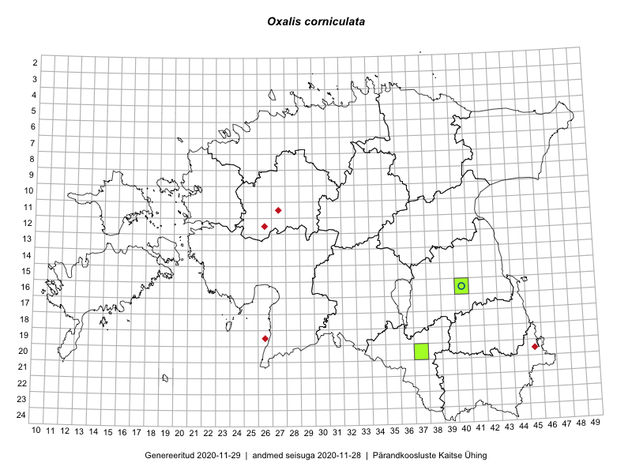

Oxalis corniculata — aed-jänesekapsas
Oxalidaceae :: Oxalis corniculata L. (77)

Kaart põhineb 77 kirjel:
vaatlusi 70
herbaareksemplare 7
Taime kaasaegsed ja ajaloolised leiukohad asuvad 49 ruudus.
Tingmärgid ja ruutude arvud periooditi (U1 / V2 )
█ 2006–2020 (47/–)
◆/◇ 1971–2005 (2/4)
○ 1921–1970 (1/0)
+ kuni 1920 (0/0)
× hävinud (–/0)
? kaheldav (–/0)
| Ruut | Leidja(d) | Leiuaeg | Kirje |
|---|---|---|---|
| 11-27 | Tõnu Ploompuu | 1998 | ruut/ala: Oxalis corniculata L. |
| 19-26 | Toomas Kukk, Tõnu Ploompuu | 1998-06-27–1998-06-28 | ruut/ala: Oxalis corniculata L. |
| 13-15 | Toomas Kukk, Eerik Leibak | 2015-08-10 | ruut/ala: Oxalis corniculata L. |
| 10-41 | Toomas Kukk, Raivo Kalle | 2015-05-14 | ruut/ala: Oxalis corniculata L. |
| 16-45 | Toomas Kukk, Eerik Leibak | 2015-07-29 | ruut/ala: Oxalis corniculata L. |
| 16-45 | Toomas Kukk, Eerik Leibak | 2015-07-29 | ruut/ala: Oxalis corniculata L. |
| 07-45 | Toomas Kukk, Tiit Hallikma | 2015-06-01 | ruut/ala: Oxalis corniculata L. |
| 12-39 | Peedu Saar, Eerik Leibak | 2015-08-16 | ruut/ala: Oxalis corniculata L. |
| 12-39 | Peedu Saar, Eerik Leibak | 2015-08-16 | ruut/ala: Oxalis corniculata L. |
| 14-26 | Tiit Hallikma, Indrek Tammekänd, Toomas Kukk | 2015-06-08 | ruut/ala: Oxalis corniculata L. |
| 07-45 | Tiit Hallikma, Toomas Kukk | 2015-06-01 | ruut/ala: Oxalis corniculata L. |
| 15-40 | Elle Rajandu | 2015-04-15–2015-05-30 | ruut/ala: Oxalis corniculata L. |
| 09-38 | Karin Kikas, Elle Rajandu | 2015-06-01–2015-06-03 | ruut/ala: Oxalis corniculata L. |
| 07-37 | Karin Kikas, Elle Rajandu | 2015-06-02–2015-06-05 | ruut/ala: Oxalis corniculata L. |
| 11-21 | Hanna-Eliisa Luts, Tõnu Ploompuu | 2015-08-13 | ruut/ala: Oxalis corniculata L. |
| 09-42 | Tõnu Ploompuu | 2015-08-26–2015-08-29 | ruut/ala: Oxalis corniculata L. |
| 10-23 | Hanna-Eliisa Luts, Tõnu Ploompuu | 2015-07-16 | ruut/ala: Oxalis corniculata L. |
| 10-24 | Hanna-Eliisa Luts, Tõnu Ploompuu, Anna-Grete Rebane | 2015-07-19 | ruut/ala: Oxalis corniculata L. |
| 11-20 | Hanna-Eliisa Luts, Tõnu Ploompuu | 2015-08-13 | ruut/ala: Oxalis corniculata L. |
| 11-26 | Hanna-Eliisa Luts, Tõnu Ploompuu | 2015-07-28 | ruut/ala: Oxalis corniculata L. |
| 10-22 | Tõnu Ploompuu | 2015-08-21 | ruut/ala: Oxalis corniculata L. |
| 12-26 | Tõnu Ploompuu | 2015-06-23 | ruut/ala: Oxalis corniculata L. |
| 11-23 | Hanna-Eliisa Luts, Anna-Grete Rebane, Tõnu Ploompuu | 2015-07-20 | ruut/ala: Oxalis corniculata L. |
| 09-25 | Meelis Muuga, Tõnu Ploompuu | 2015-08-17 | ruut/ala: Oxalis corniculata L. |
| 09-21 | Kadi-Liis Kesler, Tõnu Ploompuu | 2015-07-14 | ruut/ala: Oxalis corniculata L. |
| 06-28 | Tõnu Ploompuu | 2015-06-06 | ruut/ala: Oxalis corniculata L. |
| 10-21 | Tõnu Ploompuu | 2015-08-21–2015-08-23 | ruut/ala: Oxalis corniculata L. |
| 10-22 | Tõnu Ploompuu | 2015-05-20–2015-06-03 | ruut/ala: Oxalis corniculata L. |
| 24-44 | Rein Kalamees, Eerik Leibak | 2016-06-15 | ruut/ala: Oxalis corniculata L. |
| 24-44 | Rein Kalamees, Eerik Leibak | 2016-06-15 | ruut/ala: Oxalis corniculata L. |
| 14-28 | Thea Kull, Tiit Hallikma | 2016-07-08 | ruut/ala: Oxalis corniculata L. |
| 06-32 | Eerik Leibak | 2016-06-25 | ruut/ala: Oxalis corniculata L. |
| 05-26 | Tiina Elvisto, Eerik Leibak | 2016-07-04 | ruut/ala: Oxalis corniculata L. |
| 05-26 | Tiina Elvisto, Eerik Leibak | 2016-07-04 | ruut/ala: Oxalis corniculata L. |
| 20-35 | Thea Kull, Eerik Leibak | 2016-07-18 | ruut/ala: Oxalis corniculata L. |
| 20-35 | Thea Kull, Eerik Leibak | 2016-07-18 | ruut/ala: Oxalis corniculata L. |
| 12-33 | Tõnu Ploompuu, Marko Veinbergs, Eerik Leibak | 2016-07-22 | ruut/ala: Oxalis corniculata L. |
| 11-33 | Tõnu Ploompuu, Marko Veinbergs, Eerik Leibak | 2016-07-22 | ruut/ala: Oxalis corniculata L. |
| 12-33 | Tõnu Ploompuu, Marko Veinbergs, Eerik Leibak | 2016-07-22 | ruut/ala: Oxalis corniculata L. |
| 11-33 | Tõnu Ploompuu, Marko Veinbergs, Eerik Leibak | 2016-07-22 | ruut/ala: Oxalis corniculata L. |
| 05-36 | Tõnu Ploompuu, Eerik Leibak | 2016-07-27 | ruut/ala: Oxalis corniculata L. |
| 05-37 | Tõnu Ploompuu, Eerik Leibak | 2016-07-27 | ruut/ala: Oxalis corniculata L. |
| 05-37 | Tõnu Ploompuu, Eerik Leibak | 2016-07-27 | ruut/ala: Oxalis corniculata L. |
| 06-49 | Toomas Kukk | 2016-07-23 | ruut/ala: Oxalis corniculata L. |
| 08-35 | Sander Laherand, Toomas Kukk, Nele Jõessar | 2016-07-27 | ruut/ala: Oxalis corniculata L. |
| 11-15 | Sander Laherand | 2016-07-18 | ruut/ala: Oxalis corniculata L. |
| 04-28 | Sander Laherand, Tõnu Ploompuu, Nele Jõessar | 2016-07-25 | ruut/ala: Oxalis corniculata L. |
| 16-27 | Tiit Hallikma, Tõnu Ploompuu | 2016-06-20 | ruut/ala: Oxalis corniculata L. |
| 15-27 | Tiit Hallikma, Tõnu Ploompuu | 2016-07-20 | ruut/ala: Oxalis corniculata L. |
| 14-30 | Hannes Pehlak, Tõnu Ploompuu, Marko Veinbergs | 2016-07-21 | ruut/ala: Oxalis corniculata L. |
| 17-25 | Tiit Hallikma, Tõnu Ploompuu | 2016-07-06 | ruut/ala: Oxalis corniculata L. |
| 08-20 | Tiit Hallikma, Tõnu Ploompuu | 2016-07-07 | ruut/ala: Oxalis corniculata L. |
| 06-38 | Tõnu Ploompuu | 2016-07-17 | ruut/ala: Oxalis corniculata L. |
| 13-30 | Tõnu Ploompuu, Hannes Pehlak, Marko Veinbergs | 2016-07-21 | ruut/ala: Oxalis corniculata L. |
| 04-35 | Tõnu Ploompuu | 2016-07-16 | ruut/ala: Oxalis corniculata L. |
| 05-41 | Tiit Hallikma, Tõnu Ploompuu | 2016-07-26 | ruut/ala: Oxalis corniculata L. |
| 05-42 | Tiit Hallikma, Tõnu Ploompuu | 2016-07-26 | ruut/ala: Oxalis corniculata L. |
| 05-42 | Tiit Hallikma, Tõnu Ploompuu | 2016-07-26 | ruut/ala: Oxalis corniculata L. |
| 05-42 | Tiit Hallikma, Tõnu Ploompuu | 2016-07-26 | ruut/ala: Oxalis corniculata L. |
| 05-41 | Tiit Hallikma, Tõnu Ploompuu | 2016-07-26 | ruut/ala: Oxalis corniculata L. |
| 09-25 | Meelis Muuga, Tõnu Ploompuu | 2015-08-17 | ruut/ala: Oxalis corniculata L. |
| 09-42 | Tõnu Ploompuu | 2015-08-26–2015-08-29 | ruut/ala: Oxalis corniculata L. |
| 10-23 | Hanna-Eliisa Luts, Tõnu Ploompuu | 2015-07-16 | ruut/ala: Oxalis corniculata L. |
| 11-20 | Hanna-Eliisa Luts, Tõnu Ploompuu | 2015-08-13 | ruut/ala: Oxalis corniculata L. |
| 11-21 | Hanna-Eliisa Luts, Tõnu Ploompuu | 2015-08-13 | ruut/ala: Oxalis corniculata L. |
| 11-26 | Hanna-Eliisa Luts, Tõnu Ploompuu | 2015-07-28 | ruut/ala: Oxalis corniculata L. |
| 06-28 | Tõnu Ploompuu | 2015-06-06 | ruut/ala: Oxalis corniculata L. |
| 10-22 | Tõnu Ploompuu | 2015-06-03 | ruut/ala: Oxalis corniculata L. |
| 09-21 | Kadi-Liis Kesler, Tõnu Ploompuu | 2015-07-14 | ruut/ala: Oxalis corniculata L. |
| 06-49 | Toomas Kukk | 2017-07-22 | ruut/ala: Oxalis corniculata L. |
| 16-40 | M. Kask | 1967-09-02 | TAA0088168: Oxalis corniculata L. |
| 16-40 | Linda Viljasoo | 1970-09-01 | TAA0088170: Oxalis corniculata L. |
| 16-40 | Linda Viljasoo | 1970-09-01 | TAA0088171: Oxalis corniculata L. |
| 20-37 | Sander Laherand | 2016-09-28 | TAA0133354: Oxalis corniculata L. |
| 17-25 | Tiit Hallikma, Tõnu Ploompuu | 2016-07-06 | TAA0134590: Oxalis corniculata L. |
| 16-40 | Toomas Kukk | 2018-07-24 | TAA0146167: Oxalis corniculata L. |
| 16-40 | Toomas Kukk | 2018-07-24 | TAA0146168: Oxalis corniculata L. |
Ruutude arv uue atlase andmekogu järgi. Muuhulgas arvestab vanemat herbaariumi, 2005. aasta atlase välitöölehtedelt uuesti digitaliseeritud andmeid jne. Uue atlase andmekogust pärinevad andmed on kaardile kantud siniste sümbolitega.↩︎
Ruutude arv 2005. aasta atlase (Kukk, T., Kull, T., Eesti taimede levikuatlas. Eesti Maaülikool, Põllumajandus- ja Keskkonnainstituut, Tartu, 2005) järgi. Andmeallikana on kasutatud levik.exe programmi, kus igas ruudus on registreeritud vaid uusim leid. Seetõttu on vanemate perioodide kohta andmed puudulikud. Kasutatud levik.exe andmestikus leidub mõningaid kõrvalekaldeid atlase trükis ilmunud versioonist, sagedamini tarnade ja käpaliste seas. Lisaks leidub selles andmestikus valik liike (peamiselt väheste leidudega tulnuktaimed), mille kaarte trükis ei avaldatud. Vana atlase andmed ruutudest, milles ei ole uue atlase andmekogus leide enne 2006. aastat, on kaardil esitatud punaste sümbolitega. Vana atlase andmetel hävinud ja kaheldavaid leiukohti pole hilisemate (taas)leidude põhjal korrigeeritud.↩︎